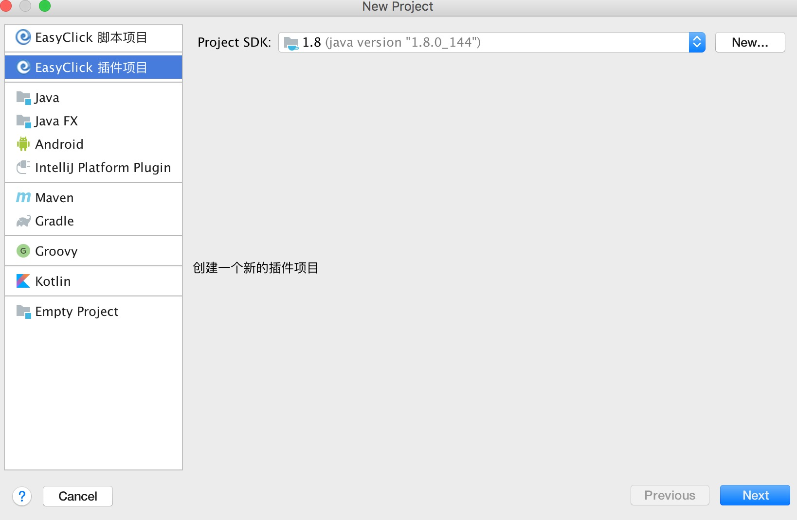
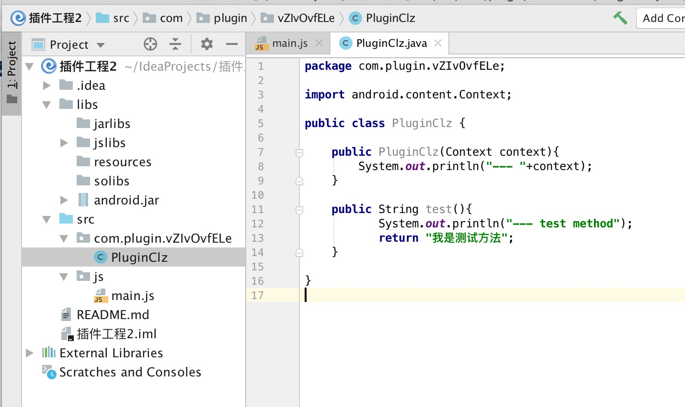

1. 说明
- 插件本身是一个apk包，和普通的android开发无任何区别
- 开发的时候可以使用Android Studio进行开发，打包成apk即可
- 本章节主要介绍使用EasyClick开发开发插件
2. 新建插件工程
- 使用IDEA创建项目选择'EasyClick 插件工程'
- 点击下一步并完成，会自动生成对应的java类和配置信息

3. 插件目录结构
- src/js/main.js 这个文件是js调用插件相关方法的测试入口
- src/com/ 这个文件夹下面存放的的java源码，PluginClz 类是默认生成的插件入口类
- libs/jarlibs文件夹用于存放三方引用jar包，会被合并到插件中
- libs/solibs 存放so封装的文件，会被编译到插件的 lib 文件夹中
- libs/resources 存放资源的文件，会被编译到插件的 resources 文件夹中
- libs/jslibs 存放JS类库文件，不会编译到插件中，仅用来进行测试和调用
- 作为插件开发者，只要关注java代码的编写即可，如果你有jni的调用，请将so文件放到libs/solibs中

4. 插件java类 PluginClz
- PluginClz是默认生成的插件java类
- test 方法是默认生成的插件方法
- 实际调用请看main.js中的调用
5. 插件运行
- 执行菜单栏 'EasyClick 开发工具 - 运行工程' 即可，前提是要连接到手机
6. 插件打包
- 执行菜单栏 'EasyClick 开发工具 - 打包工程' 即可，打包结果请看EasyClick 运行日志的输出
6.1. 插件使用
- 将打好包的apk文件，放到脚本工程的plugin 文件夹下
- 使用 loadDex 函数载入插件
- 使用new方法生成插件对象实例即可调用